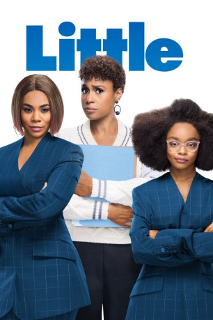

#11947 Little
 gesehen am 26.10.2019
gesehen am 26.10.2019
 
 IMDB-Wertung: 5.4 / 10
IMDB-Wertung: 5.4 / 10  Metascore: 49
Metascore: 49 
Jordan Sanders ist eine moderne Karrierefrau - bossy, bitchy, latent überspannt und nie müde, stets und ständig ihre Mitarbeiter zu schikanieren. Ihr perfektes Leben gerät aus den Fugen, als sie eines Morgens in ihrer luxuriösen Penthouse-Wohnung aufwacht und plötzlich wieder dreizehn ist, ausgerechnet vor einer „lebenswichtigen“ Präsentation, bei der alles auf dem Spiel steht. Jordans jüngeres Ich weiht nur ihre Assistentin April in ihr verzwicktes Geheimnis ein. Natürlich ist April loyal, nutzt aber auch endlich ihre Chance, mit ihrem Bitch-Boss einmal Klartext zu reden. Als wäre das nicht schon stressig genug, zwingt auch noch das Jugendamt die „kleine“ Jordan die Schulbank zu drücken. Ihr Ärger darüber verfliegt aber schnell, als sie den unheimlich heißen Klassenlehrer trifft.
Jahr: 2019
Dauer: 108 Minuten
FSK: 6
Land: USA Studio: Universal PicturesTonspuren: DD5.1 - ,
Untertitel: Deutsch,
Auflösung: 1080p (1920x1040) Größe: 8325 MB
Genre: Komödie, Fantasy, Liebe
Regisseur: Tina Gordon
Drehbuch: Tracy Oliver, Tina Gordon, Tracy Oliver
Soundtrack: Germaine Franco
Darsteller:
 Regina Hall als Jordan Sanders
Regina Hall als Jordan Sanders- Issa Rae als April Williams
- Marsai Martin als Little Jordan Sanders
- Justin Hartley als Mr. Marshall
- Tracee Ellis Ross als HomeGirl
- Tone Bell als Preston
- Mikey Day als Connor
- JD McCrary als Isaac
- Tucker Meek als Devon
- Thalia Tran als Raina
- Marley Taylor als Stevie
- Eva Carlton als Caren Greene / Jasmine
- Luke James als Trevor
 Rachel Dratch als Agent Bea
Rachel Dratch als Agent Bea- Noree Victoria als Jordan's Mom
- Kendra L. Franklin als Melissa
- Marc Hawes als Scott
- Jade Fernandez als Emily
- Chelsea Hayes als Rachel
- Palmer Williams Jr. als Windsor Security Guard
- Blair Jasin als Intern Martin
 Caleb Emery als Valet Vince
Caleb Emery als Valet Vince- Andrew Nicolas Starr als Charlie
 Vince Pisani als Principal Han
Vince Pisani als Principal Han- Martha B. Knighton als Oldest Teacher
- Kausar Mohammed als Mrs. Parker
- Nicole Marie Johnson als Condo Resident
- Amor Owens als Condo Resident
- Cecelia Specht als Janice / Condo Resident
- Jack Breen als Condo Kid
- Katelyn Farrugia als Barista
- Kenny Waymack Jr. als Condo Lobby Security Guard
- Hannah Westerfield als Popular Girl
- Alie Urquhart als Student
- Desi Banks als Postmates Delivery Guy
- Abbie Gayle als Hostess
- Andrew Romano als Waiter
- Taylor Towery als Woman at Bar
- Greg Lockett als Man in Restaurant on a Date
 George Lott als Passenger at Stop Light
George Lott als Passenger at Stop Light- Kayla Peltier als Pep Rally Dancer
- Mylie Stone als Pep Rally Dancer
 Nick DeKay als Police Officer (uncredited)
Nick DeKay als Police Officer (uncredited)- Kayte Giralt als Female Driver (uncredited)
- Dakota James Alden Lane als JSI Employee / Gold Shoes Guy (uncredited)
- Ella Madison als Amanda (uncredited)
- Ella Myers als 'Jock' Tennis Player (uncredited)
- Milton Saul als Condo Resident (uncredited)
- Jonathon Watson als JSI Employee (uncredited)
- Christopher A. Martin als Jordan's Dad
Datei: X:\2019(G-M)\Little (2019, FSK6, 1920x1040).mkv seit 26.10.2019
Festplatte: HD 2018(G-Z)-2019(A-Z)
 Es gibt insgesamt 47 Filme in der Gruppe '2019(G-M)'
Es gibt insgesamt 47 Filme in der Gruppe '2019(G-M)'